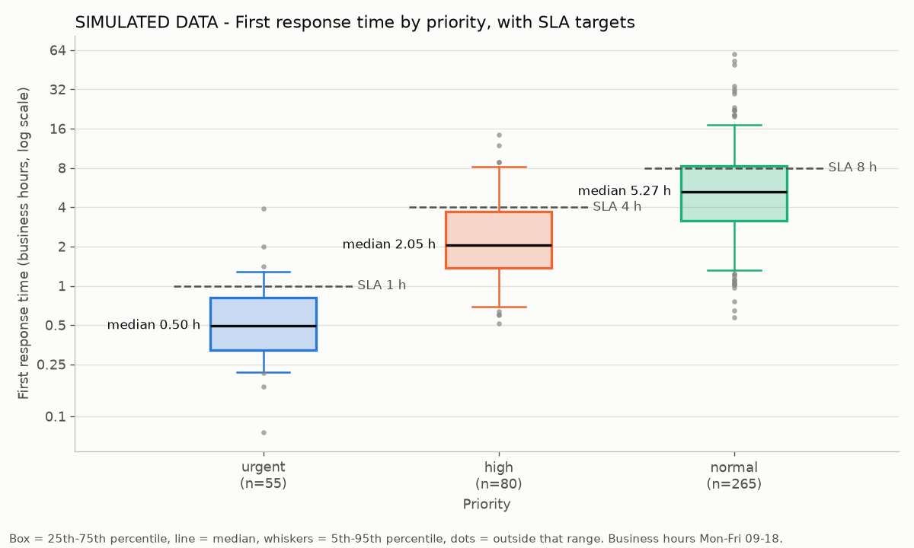
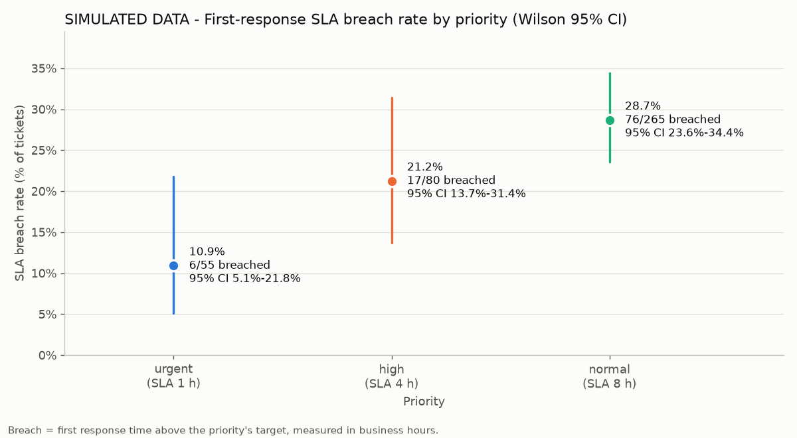
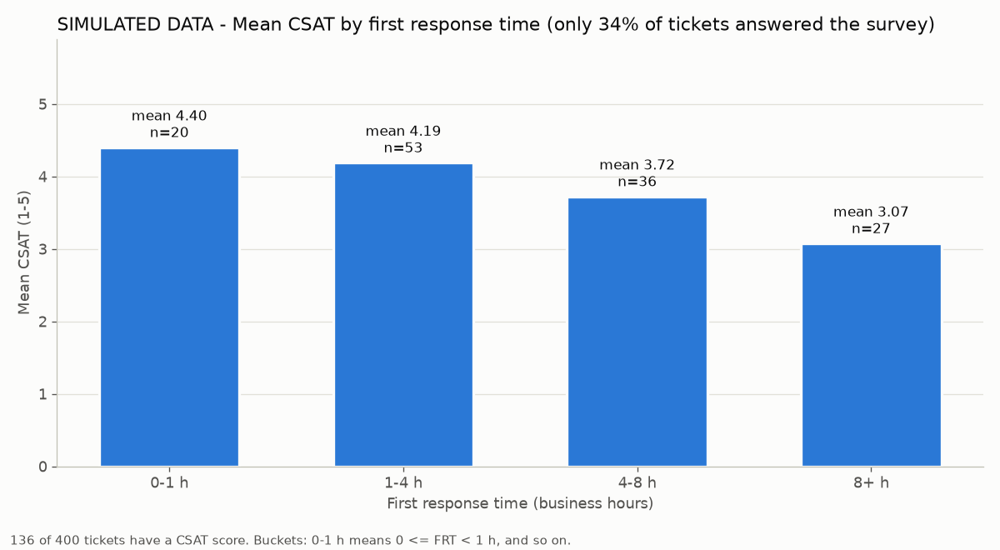
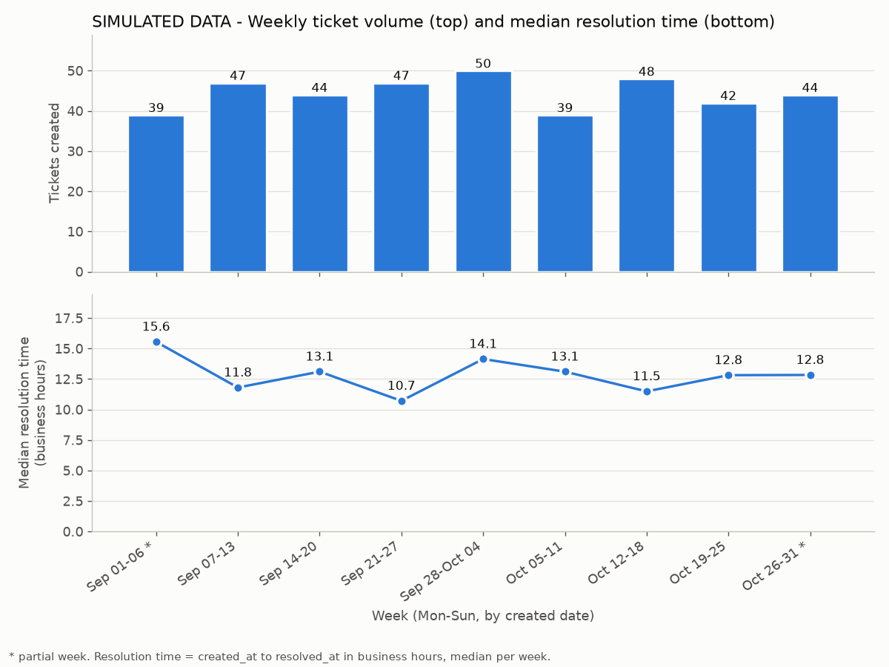

Support Quality Lab
A small reporting pipeline for an e-commerce support inbox. It turns a ticket log into response-time, SLA and satisfaction reports, and includes a rubric for rating AI-drafted replies.
All data on this page is simulated. There are no real customers and no real store. The numbers show how the report works, not how any real team performs.
Code on GitHub (opens in a new tab)What I built
-
Ticket simulator
400 tickets over nine weeks. Labels (intent, risk, needs-human) are resampled from 54 hand-labelled fictional emails. Every assumption is written at the top of the script, and the run is reproducible with a fixed seed.
-
Metrics report
First-response and resolution times in business hours, SLA breach rates with 95% confidence intervals, weekly trends, and customer satisfaction by response speed.
-
Reply-rating rubric
Five criteria scored 0 to 2, seven error labels, and three critical errors (invented facts, missed escalation, unsafe promises) that fail a reply whatever its score. Rater agreement is measured with weighted Cohen's kappa. No ratings exist yet, because the AI drafts have not been generated.
The charts
First response time by priority

SLA breach rate by priority

Satisfaction by response speed

Weekly volume and resolution time

How to read this honestly
- The breach rate is highest for normal tickets only because of the response times I assumed for each priority. It is an artifact of the assumptions, not a finding.
- Satisfaction falls as replies get slower because the simulator is built that way.
- Rates per request type mostly reflect the priority mix, so they must be read together with the priority table.
- The label mix comes from only 54 emails, so shares inherit that small base. No holidays, time zones, staffing or queue effects are modelled.
Why this matters
With a real helpdesk export the same steps apply: define SLA targets, measure in business hours, report uncertainty, and say what the data cannot show. This sample project is the pipeline, built so that real data can replace the simulated log once its columns are mapped.
Earlier phase of the same project
Two baseline classifiers for routing support emails were evaluated on a development split. The test split is reserved for a single final run per method, which has not been run yet.